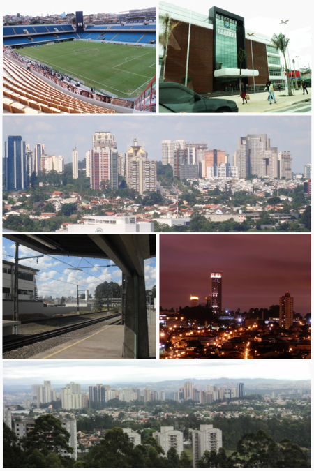

Santos é um município portuário sede da Região Metropolitana da Baixada Santista, localizado no litoral do estado de São Paulo, no Brasil. Com a maior participação econômica da citada região, abriga o maior porto da América Latina, o principal responsável pela dinâmica econômica da cidade ao lado do turismo, da pesca e do comércio, ocupando a 5ª colocação entre as não capitais mais importantes para a economia brasileira.
Santos possui uma economia crescente. Em 2016, a cidade era a 33ª mais rica do país, com produto interno bruto de 21 954 556,74 de reais. Durante um bom tempo, sua economia centrou-se na comercialização do café; em 1922 foi inaugurada a Bolsa Oficial do Café, onde eram negociadas riquezas do mercado cafeeiro para o país, e que resultou no atual Museu do Café abrigado no local atualmente conhecido como Centro Histórico.
Maior cidade do litoral paulista, o principal cartão-postal do município são os 7 km de praia. O Livro dos Recordes situa os jardins da orla de Santos como formadores do maior jardim frontal de praia em extensão do mundo. A preservação e o cuidado com a flora do ambiente praiano santista, permeado de palmeiras e amendoeiras.
Sorocaba é um município do estado de São Paulo é a quarta cidade mais populosa do interior paulista. Localizada a apenas 100 km da capital, o município faz parte do considerado Complexo Metropolitano expandido, junto à Campinas e a Baixada Santista.
A primeira citação ao nome “Sorocaba” vem de 1654, quando o capitão Baltasar Fernandes e sua família se instauraram na região e fundaram o povoado que recebeu este nome. A palavra é de origem tupi-guarani e pode ser interpretado como “terra rasgada” ou “lugar da rasgadura”. Em 1661, a região foi elevada a vila e passou a ser chamado de Vila de Nossa Senhora da Ponte de Sorocaba. Foi somente em 1842 que Sorocaba ganhou esse nome oficialmente e passou para a categoria de cidade.
Mesmo antes de ser considerada uma cidade, Sorocaba se tornou um importante polo econômico do país, tendo uma posição estratégica entre comerciantes do Norte, Nordeste e Sul A região rapidamente se tornou uma parada obrigatória para os tropeiros. Outro fato importante que marca a história da cidade são as Feiras de Muares. Por sua localização e importância comercial, o município se tornou sede desse tipo de feira que era caraterizada pela venda e troca de animais.

Município do estado de São Paulo desde 19 de fevereiro de 1962, a história de Osasco começa no século XVII, quando ainda era colonizada. Antes disso, a região era habitada por inúmeras tribos indígenas do tronco tupi-guarani. No século XIX, vendida para o imigrante italiano Antonio Agú, o fundador da cidade e criador das primeiras fábricas de tijolos, telhas, tubos e cerâmicas na região, formando a primeira indústria da cidade.
Além disso, Agú decidiu construir a estação ferroviária, fazendo com que vários operários viessem para a região. Os dirigentes da estrada de ferro queriam batizar a estação com o nome do principal empreendedor da região, porém Antonio Agú pediu que a homenagem não fosse dada a ele e sim à sua vila natal da Itália: Osasco.
Hoje, adjacente a São Paulo, Osasco proporciona fácil acesso para os principais bairros da Cidade e importante atividade econômica nos setores industrial, comercial e de serviços, tornando-se uma das mais ricas e populosas cidades do Estado de São Paulo e do Brasil.
Guarulhos é um município da Região Metropolitana de São Paulo, no estado de São Paulo, no Brasil. É a segunda cidade mais populosa do estado, a 13ª mais populosa do Brasil e a 53ª mais populosa do continente americano, com 1 392 121 habitantes, segundo estimativa do Instituto Brasileiro de Geografia e Estatística (IBGE) para 1.º de julho de 2020.
Guarulhos foi fundada em 8 de dezembro de 1560, pelo padre jesuíta Manuel de Paiva, com a denominação de Nossa Senhora da Conceição. Sua origem está ligada à de cinco outros povoamentos que tinham, como principal objetivo, defender o povoado de São Paulo dos Campos de Piratininga contra um possível ataque dos Tamoios.
É a cidade não capital de estado mais populosa do Brasil e é considerada a 12ª cidade mais rica do Brasil. Em 2016, registrou um Produto Interno Bruto (PIB) na ordem de 53,9 bilhões de reais, o que representou mais de 1% de todo PIB brasileiro na época.[6] além de deter o 4º maior produto interno bruto (PIB) de seu estado e o 12º maior do país.
Ribeirão Preto (pronúncia em português: /ʁibejˈɾɐ̃w ˈpɾetu/) é um município brasileiro sede da Região Metropolitana de Ribeirão Preto (RMRP), no interior do estado de São Paulo, Região Sudeste do país. Pertence à Mesorregião e Microrregião de Ribeirão Preto, localizando-se a nordeste do estado, distando da Capital do Estado cerca de 315 km.
Ocupa uma área de 650,916 km², sendo que 127,309 km² estão em perímetro urbano. Com 711 825 habitantes, é a nona cidade mais populosa do País sem contar as capitais – no geral é a 27ª e no Estado é a sétima, incluindo a capital paulista, segundo estimativa populacional calculada pelo IBGE para 2020, quando a população ribeirão-pretana cresceu 1,21% em relação ao valor do ano anterior.
Consequatur, fugiat quasi placeat officiis ab incidunt perferendis voluptate exercitationem nobis doloremque ea, molestiae aliquam asperiores minima voluptatibus dolorum corrupti similique enim quod rem vel ipsam? Alias saepe aliquid expeditaA cidade tem uma temperatura média anual de 23,2 °C e na vegetação original do município predomina a mata Atlântica. Com 99,7% de seus habitantes vivendo na zona urbana, o município contava em 2009 com 95 estabelecimentos de saúde (SUS).

Poá é um dos onze municípios paulistas considerados estâncias hidrominerais pelo estado de São Paulo, por cumprirem determinados pré-requisitos definidos por lei estadual. Tal status garante a esses municípios uma verba maior por parte do estado para o desenvolvimento do turismo regional.
Além disto o município adquire o direito de agregar junto ao seu nome o título de estância hidromineral, termo pelo qual passa a ser designado tanto pelo expediente municipal oficial quanto pelas referências estaduais. .
O principal setor da economia de Poá é o de serviços, já que a instalação de indústrias poluentes foi dificultada a partir de 1970, ano em que se tornou estância. Em território, é um dos menores municípios do estado de São Paulo (maior apenas que Águas de São Pedro e São Caetano do Sul).

Jundiaí é um município brasileiro no interior do estado de São Paulo. Localiza-se a 23º11'11" de latitude sul e 46º53'03" de longitude oeste, a uma altitude de 762 metros. Dista 57 quilômetros de São Paulo. Conforme dados do Instituto Brasileiro de Geografia e Estatística (IBGE) de 2019, sua população era de 418 962 habitantes.
O município apresentou, em 2016, um produto interno bruto (PIB) de mais de 39,7 bilhões de reais, colocando o município na 18.° posição em todo o país, à frente de dez capitais, sendo o 7.º município mais rico do Estado de São Paulo
A cidade possui conurbação consolidada com Várzea Paulista e Campo Limpo Paulista, além de estar em processo de conurbação com Itupeva. As cidades mencionadas fazem parte da Aglomeração Urbana de Jundiaí juntamente com os municípios de Cabreúva, Louveira e Jarinu, totalizando cerca de 771 mil habitantes. O município está integrado — junto com a Grande São Paulo, a Região Metropolitana de Campinas, a Região Metropolitana do Vale do Paraíba e Litoral Norte, a Região Metropolitana de Sorocaba e a Baixada Santista — ao Complexo Metropolitano Expandido, uma megalópole que ultrapassa os 30 milhões de habitantes

Barueri é um município da Região Metropolitana de São Paulo, no estado de São Paulo, na Região Sudeste do Brasil. Dista 26 km da Praça da Sé, marco zero da capital paulista. O município é formado pela sede e pelos distritos de Aldeia, Jardim Belval e Jardim Silveira
Sua população foi estimada no ano de 2010 em 240 656 habitantes,[10] pelo Instituto Brasileiro de Geografia e Estatística sendo a 29º cidade mais populosa do Estado[11] e a terceira cidade mais populosa da Microrregião de Osasco. Sua área é de 66,14 quilômetros quadrados, o que resulta numa densidade demográfica de 3 638,5 habitantes por quilômetro quadrado.
Barueri, assim como a maior parte dos municípios da Região Metropolitana de São Paulo, tem uma temperatura média anual de 18 graus centígrados e sua vegetação original é a da Mata Atlântica. A economia de Barueri é baseada na arrecadação de impostos provenientes da prestação de serviços. Em 1973, um terreno de 500 hectares comprado em Barueri, a Fazenda Tamboré, deu origem a um dos bairros mais famosos do Brasil, Alphaville[12].
Itaquaquecetuba, ou simplesmente Itaquá,[9] é um município brasileiro do estado de São Paulo, localizado na Região Metropolitana de São Paulo e Alto Tietê.
Distante 41 quilômetros a nordeste da cidade de São Paulo,[4] e 1 041 quilômetros de Brasília, capital federal.[10] Fundada aproximadamente entre 1560 e 1563 por jesuítas liderados pelo padre José de Anchieta. Os primórdios do município se encontram na Capela Católica de Nossa Senhora da Ajuda, igreja que foi fundada pelo próprio padre
É uma das cidades mais populosas do Brasil. Segundo o Instituto Brasileiro de Geografia e Estatística (IBGE), a população do município na estimativa de 2020 era de 375 011 habitantes, sendo o décimo nono município mais populoso de São Paulo, e o septuagésimo primeiro mais populoso do país; com uma área de 82,622 quilômetros quadrados
Ferraz de Vasconcelos é um dos 39 municípios da Grande São Paulo, pertencente a região do Alto Tietê que contempla dez municípios, contando com uma densidade demográfica elevada e com alto índice de desenvolvimento humano - IDH, sua altitude em relação ao mar, situa-se entre 759 e 760 metros. Quando a cidade ainda era pertencente de terras particulares, já eram cultivadas uvas Itália na cidade.[8] Atualmente restaram poucos produtores que abastecem o comércio local, apesar de ser o primeiro município produtor da uva Itália no Brasil
A história de Ferraz de Vasconcelos começa com a passagem de tropeiros pela cidade, que na época pertencia ao município de Mogi das Cruzes. Eles levavam alimentos, lenhas e carvão da região para São Paulo e outros vinham da capital do Império.
Eles faziam este caminho que passava pelo bairro do Lageado, em Guaianases, no extremo leste da capital.[10] Daí surge o vilarejo, originado da parada destes tropeiros à beira de um córrego, que foi sendo represado e passou a ser conhecido como Tanquinho.